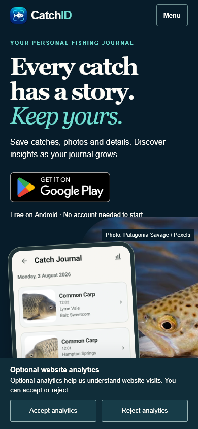
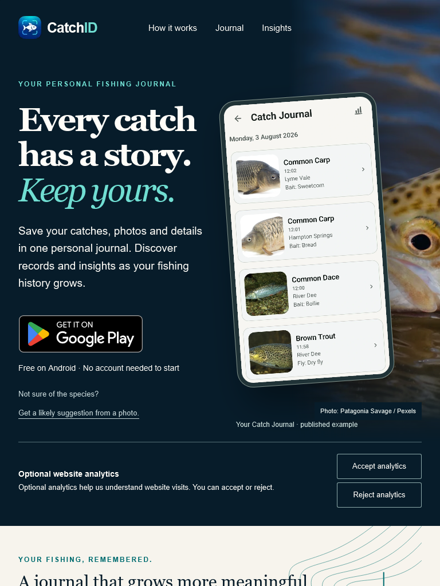
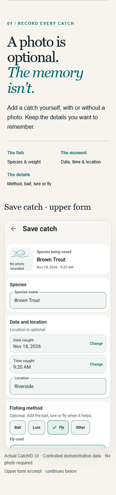
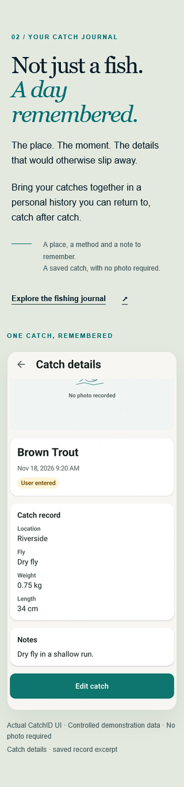
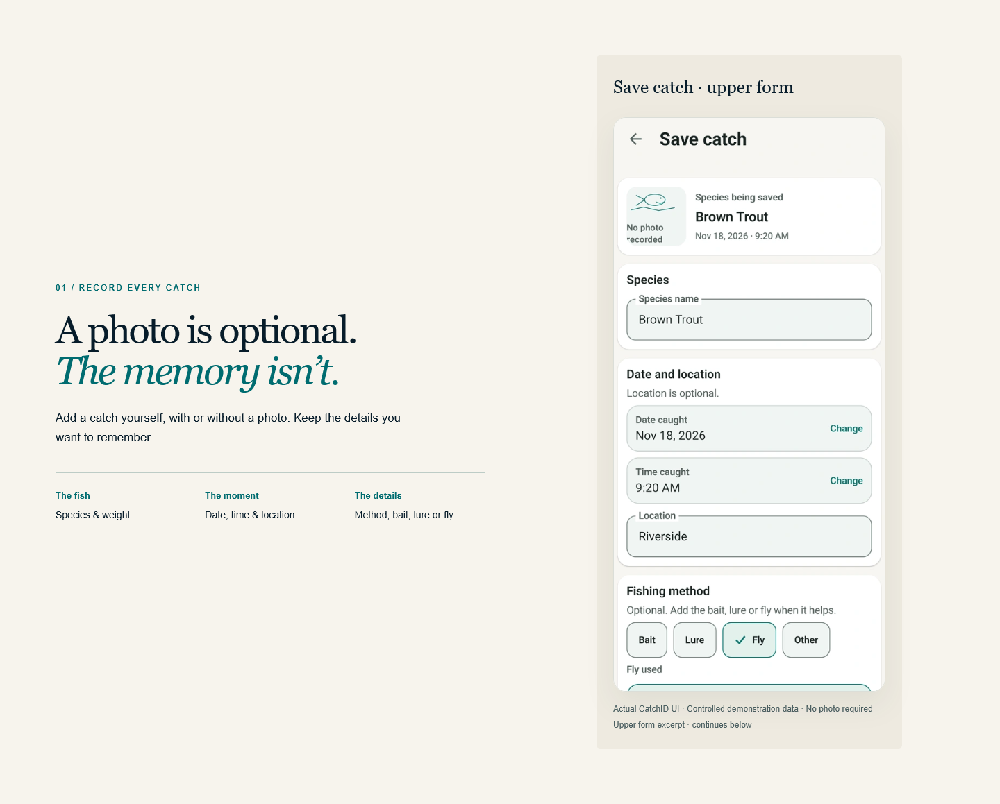
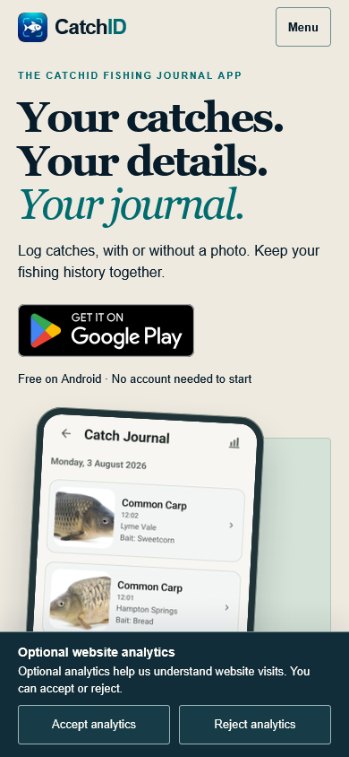
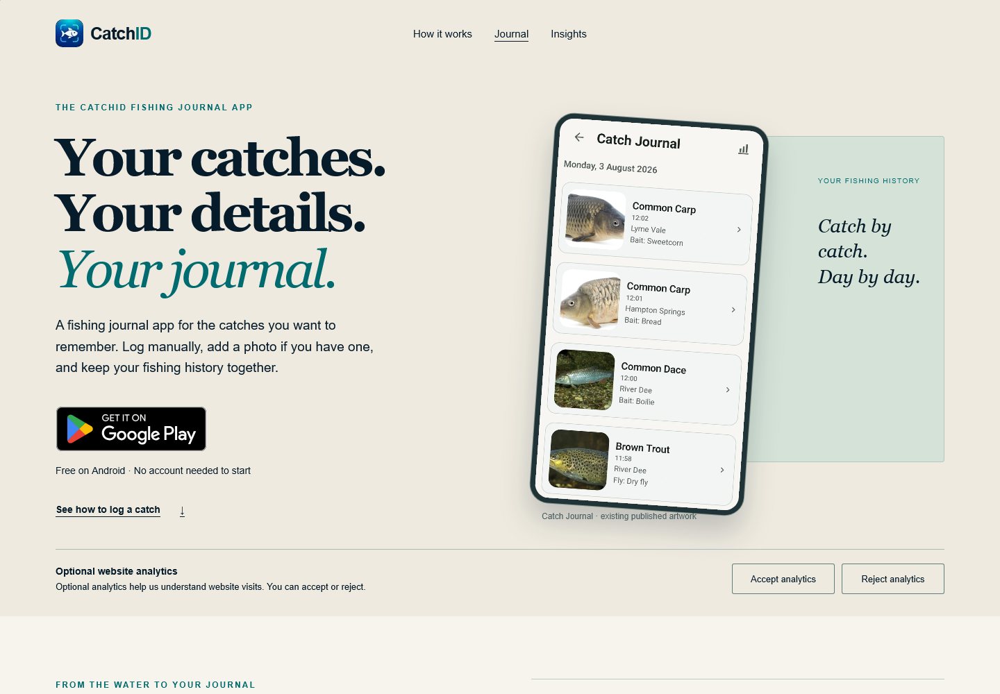
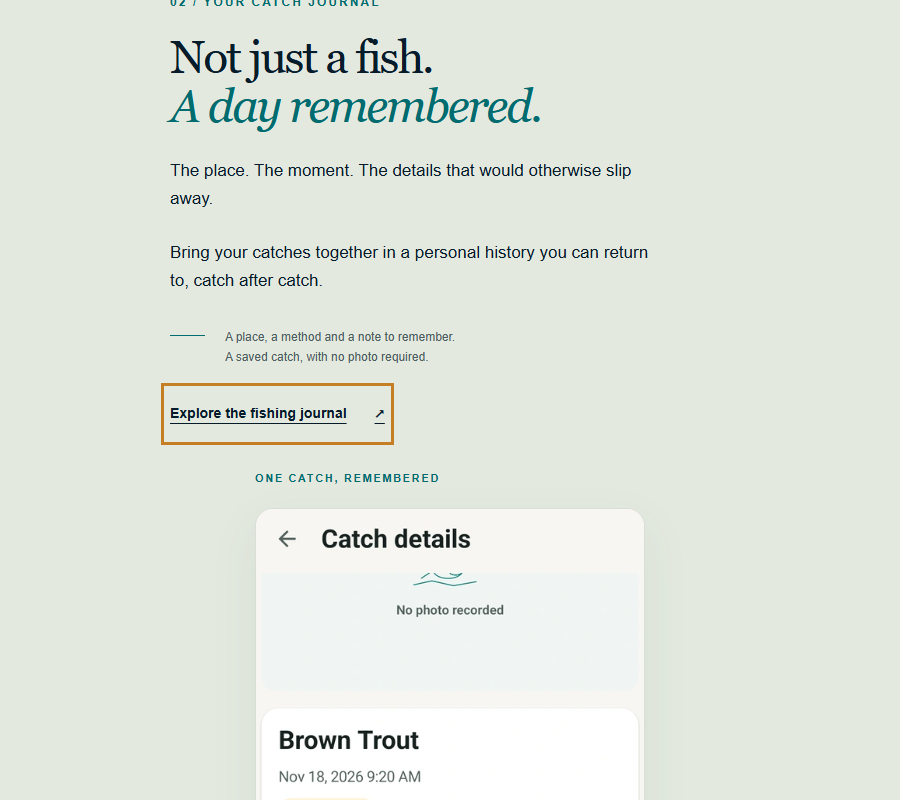
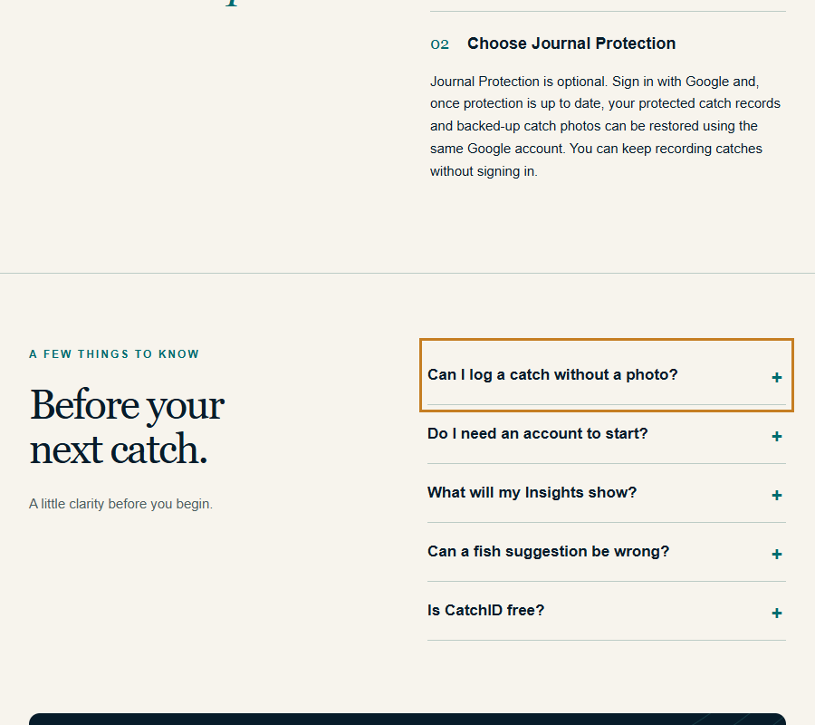
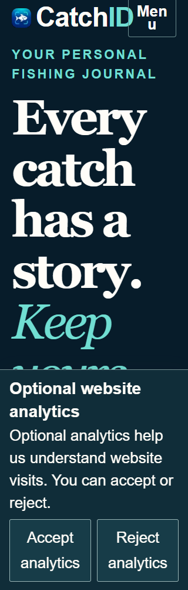

CatchID publication readiness
20 November 2026 · Approved CRO-08 implementation preserved. This offline index contains browser-rendered evidence and the decisions needed before Pete separately considers publication.
Implementation 94a4f5ed343b70e7f992556acb1a037158ebb9c4
Audit branch codex/cid-web-cro-09-readiness
Primary reports
- Readiness verdict and gate matrix
- Individual asset decisions
- Browser and accessibility coverage
- Security, privacy and delivery
- Play Production evidence
- Unapplied publication checklist
- QA and remote delivery receipt
Actual engine captures
Click an image for its original browser PNG. Firefox and Windows WebKit are real engines; these viewport captures are not physical-device or Safari tests.

















Sceptical findings






Originals and machine evidence
- Untouched Save catch upper · Untouched Catch details · Capture provenance
- Source/output preservation, source hashes and image sizes
- Engine matrices: Chrome · Firefox · WebKit
- Computed focus contrast · Live privacy wording readback
- Fresh npm audit · Separate Node runtime advisories · Registry verification
- Unapplied Android continuity proposal


All screenshots are browser output, with no edited pixels or composites. Original element-only crops are retained; the full-width section captures above avoid evidence-capture clipping. No public preview, deployment or production change.